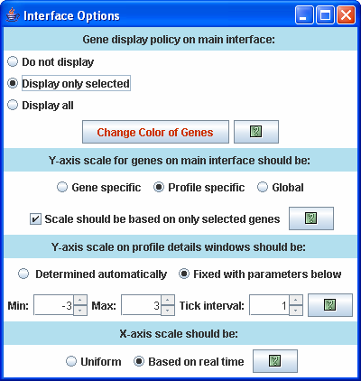
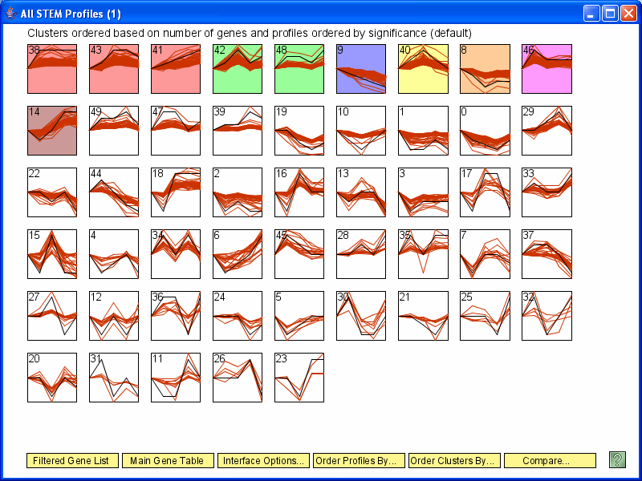
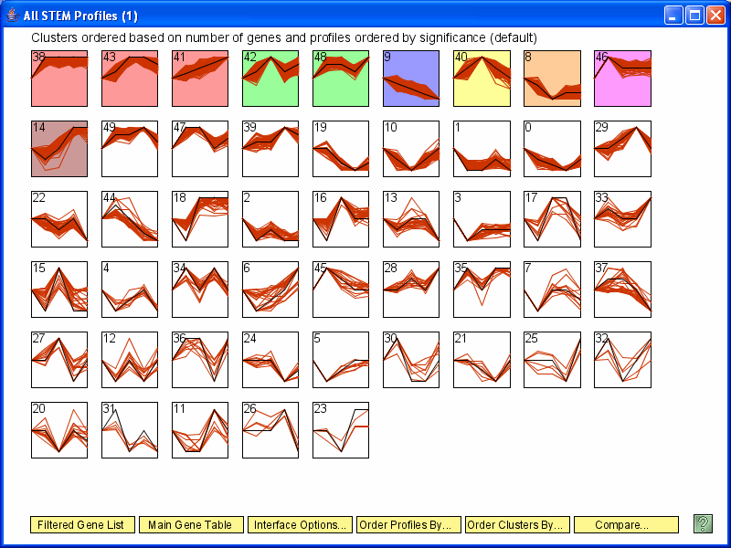
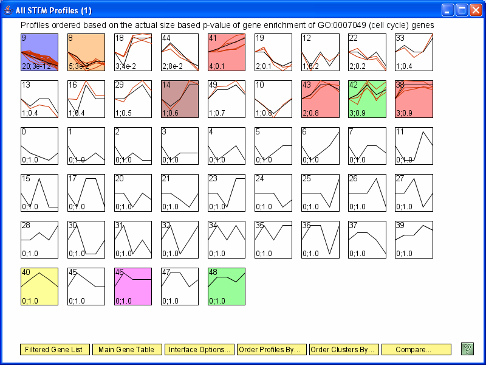
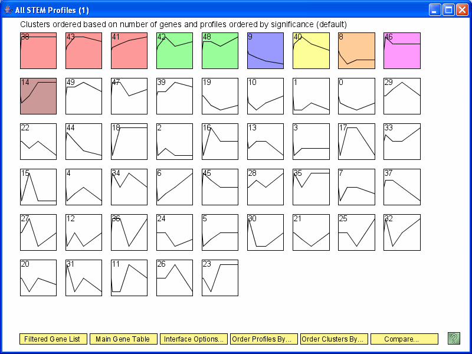
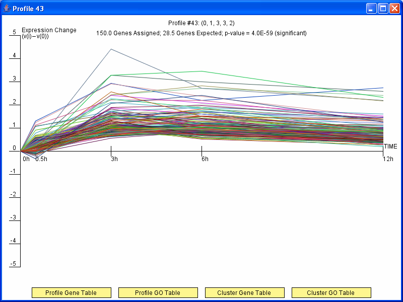

Version 1.2.0 added several new interface options to STEM. Some of these are illustrated below.
The new interface options can be accessed by pressing the new
Interface Options button along the bottom of the interface.

The interface options window that appears when pressing the
Interface Options button on the main interface.
The new options allow all gene expression profiles assigned to a profile
to be displayed on the main interface (Display all) and also just the
subset that belong to a selected GO category or gene set (Display only
selected). Also new in this version
of STEM, the y-axis scale on profile detail windows, these are
the windows which appear when
pressing on a profile box, can be fixed to user defined parameters
instead of being determined automatically by STEM.
Also the x-axis can now be visualized with the time points placed
proportional to the real sampling rate instead of being uniformly
spaced.

Above illustrates the new option in STEM to display all the genes
assigned to each profile as above. In the above
image each gene assigned to the same profile are on
the same y-axis scale, however the y-axis scales for different profiles
are different. Scales can also be gene specific (shown below) or global
where the scale is the same for all profiles.

A similar image to above, but each gene expression profile
is scaled separately making the correspondence in shape with
the model profile clearer.

The above image illustrates the new option to only display the selected genes
when ordering profiles. The selected genes are those genes
of the GO category or gene set for which the ordering is based.
In this case only the expression profiles of the cell cycle
annotated genes are plotted.

The x-axis of the profiles on the main interface with the time points
placed proportional to the real sampling rate.

A profile details window with the x-axis proportional to the
real sampling rate instead of uniformly spaced.